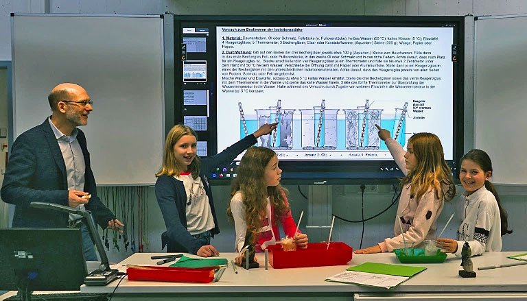

Biologie

Was ist eigentlich ein Lebewesen - und wieso ist ein Virus kein Lebewesen? Wie funktioniert eigentlich das Impfen? Was ist ein Tot-Impfstoff und was ist anders an den neuartigenmRNA-Impfstoffen? Was ist überhaupt eine messengerRNA und wieso kommt sie in jeder Zelle vor? Aus welchem Grund kommt es bei Viren viel schneller als bei einem Tagpfauenauge zu Veränderungen, sogenannten Angepasstheiten….?
Dies sind Fragen, die sich Schülerinnen und Schüler des Leibniz-Gymnasiums stellen. Angeregt und angeleitet durch LehrerInnen, unterstützt von modernen, aber auch klassischen Verstehenshilfen, finden unserer Schülerinnen und Schüler Antworten auf diese Fragen und lernen, naturwissenschaftliche Sachverhalte zu beschreiben, zu erklären und zu diskutieren.
Dabei legen wir Wert auf ein selbständiges, reflektiertes Arbeiten der Heranwachsenden, bei dem die Einzelarbeit genauso wie die Gruppenarbeit, Frontalunterricht wie auch offene Unterrichtsformen, Textarbeit wie auch Experimente ihren Platz haben.
Unsere Schülerinnen und Schüler werden an komplexe Sachverhalte methodisch durchdacht herangeführt. 3D-Modelle vom menschlichen Herz, dem Ohr, der Mitose oder einer Blüte etc. machen ähnlich wie selbst gebaute DNA- oder Zellmodelle Strukturen von Lebewesen oder molekulare Abläufe im doppelten Sinn greifbar. Versuche, beispielsweise zur Verdauung, helfen Vorgänge im menschlichen Körper zu durchschauen und verständlich zu machen. Unsere Bienenstöcke der Schulimkerei machen ebenso wie die temporär mit Erde aufgefüllten Regenwurmschaukästen, die unter dem Binokular oder Mikroskop betrachteten Einzeller oder der zu Besuch kommende Polizeihund den Biologie-Unterricht noch lebendiger.
Dank der 2019 fertiggestellten naturwissenschaftlichen Fachräume können wir auf einen hohen technischen wie auch digitalen Standard zurückgreifen. So ermöglichen flexible Laborräume das Durchführen verschiedener schülergeleiteter Experimente. Digitale Tafeln erlauben es, klassisch Tafelbilder zu erstellen, Schülerergebnisse auf dem 2,50 m breiten Smartboard-Bildschirm zu präsentieren, aber auch interaktive Lernbilder, Filme oder das Internet für den Unterricht zu nutzen. Mobile Laptops und Tablets erhöhen dabei weiter die Arbeitsmöglichkeiten.
Doch auch bei bester technischer Ausstattung sind dem Unterricht in der Schule aufgrund der Stundenplanbindung und der räumlichen/infrastrukturellen Gegebenheiten Grenzen gesetzt. Wo immer es hilft, nutzen wir daher externe Fachkompetenz und Ressourcen. Exkursionen zum offenen Labor Lübeck (LoLa) oder dem Juniorcampus der Fachhochschule Lübeck sind genauso wie das von Medizinstudenten durchgeführte Sexualaufklärungsprojekt „Mit Sicherheit verliebt“regelmäßige Bestandteile unseres Unterrichts.
Didaktische Orientierung geben uns dabei selbstverständlich die landesweiten, mit der Kultusministerkonferenz abgestimmten Fachanforderungen. Dabei spielen der evolutive Leitgedanke ebenso wie die Basiskonzepte einewiederkehrende Rolle und helfen Fragen wie „Welche Strukturen haben alle Lebewesen gemeinsam und welche Strukturen haben Viren?“ oder „Wo sind Unterschiede bei der Steuerung von Wachstum zwischen einem Einzeller und einem Wirbeltier erkennbar?“ differenziert zu beantworten.
Jörn Klinke (für die Biologiefachschaft)
Die Fotos zeigen Oberstufenschülerinnen und Schüler beim Besuch der Kieler Forschungswerkstätten zum Thema „Die Zukunft der Ostsee“, SuS beim Besuch des offenen Labors Lübeck (LoLa), beim Besuch des Reallabors Wald (diese Exkursion wurde vom Kika-Team „Erde an Zukunft“ begleitet und 2019 bei Kika gezeigt, von SuS hergestellte Zellmodelle einer Pflanze, Nervenzellmodelle und der Erbsubstanz (DNA).


Biologie-Blog
Exkursion zur Ostseestation auf dem Priwall
Am 15. September fuhren wir, der Q1-Biologie-Kurs mit unserem Lehrer Herrn Dr. Matlok, mit dem Fahrrad auf den Priwall.
Wir starteten nach den ersten beiden Unterrichtsstunden gemeinsam um 9:30 Uhr mit unseren Fahrrädern von der Schule aus. Schon die Radtour auf Seitenwegen zur Ostseestation war auch wegen des sehr guten Wetters sehr spannend.
Wir kamen durch unterschiedliche Landschaften wie Trockenwiese, Moor, Mischwald und Knicklandschaft und konnten dabei auch noch historische Stätten sehen, wie u. a. das Pöppendorfer Lager, den Pöppendorfer Ringwall und ein Großsteingrab.
Nach über einer Stunde Fahrt bei gutem Wetter, kamen wir an der Fährstation an. Nachdem wir mit der Priwallfähre rübergefahren sind, hatten wir vor der Ostseestation am Hafen eine halbe Stunde Pause. Dann wurden wir von Torsten, dem Leiter der Ostseestation begrüßt und in die Station gelassen.
Zuerst bekamen wir eine halbe Stunde Theorieunterricht, in dem Torsten uns auf die Tiere, die wir gleich selbst fangen und sehen würden, einstimmte. Auch zeigte er Aufnahmen von seltenen Tierarten, welche in der Ostsee vorkommen. Wir sahen unter anderem eine Videoaufnahme des Delfins, welcher sich seit ein paar Monaten in der Ostsee befindet. Zudem zeigte er uns sogenannte Neozoen, also Tiere, die erst in jüngerer Zeit in die Ostsee eingewandert sind – auch weil das Klima sich bei uns ändert.
Gegen 12 Uhr, durften wir uns dann endlich die Kescher nehmen und an das Hafenbecken gehen. Wir stellten uns der Aufgabe, innerhalb einer halben Stunde, so viele verschiedene Tierarten wie wir in der Ostsee finden konnten, in eine große Wanne, die mit Ostseewasser gefüllt war, zu legen. Herr Dr. Matlok traute uns zu, dass wir über 100 Tierarten fangen würden … na ja, das haben wir auch fast geschafft.
Wir hatten großen Spaß bei dem Fangen der Tiere und leider war die Zeit viel zu kurz. Torsten erzählte uns etwas über die verschiedenen Fische und Krebse, welche wir gefunden hatten, wie z. B. die Strandkrabbe, eine Chinesische Wollhandkrabbe, Ostseegarnelen, Brackwasser-Felsgarnelen, Seenadeln und verschiedene auch eingewanderte Grundelarten - wir waren also sehr erfolgreich.
Das Fangen war ja nur der Anfang, danach durften wir unseren Fang unter Binokularen noch genauer anschauen – bäm! Wer hätte gedacht, dass z. B. die Brackwasser-Seepocke mit ihren Rankenfüßen so toll aussieht?
Ein Rundgang durch die Ostseestation rundete unseren Tag ab - es war ein schöner erlebnisreicher Exkursionstag.
Tia Tramp (Q1)


Ostseestation - Travemünde
Unser Tag mit dem Q2-Biologiekurs und Frau Frederick in der Ostseestation
Habt ihr euch schon mal gefragt, was so alles in unserer Ostsee rumschwimmt? Ein Haufen glibberiger, schleimiger, zappelnder, riesiger und winziger Tierchen, die alle zusammen die reiche Biodiversität unserer heimischen See bilden!
Eins so kostbar wie das Andere, stehen die Meeresbewohner in einer ständigen Wechselbeziehung mit ihren Mitbewohnern und ihrer Umwelt, welche wir zusammen mit unserem Biokurs ergründen durften.
Nachdem wir eine kurze Einführung in das super-komplexe Thema bekommen haben, wurde unser Auge auf die kleinen und ausschlaggebenden Merkmale unserer Meeresbewohner geschult. Langsam aber sicher lernten wir eine Seenadel (entfernter Cousin vom Seepferdchen) von einer Alge zu unterscheiden, was ziemlich schwierig ist!
Nach einem kleinen Rundgang durch Aquarien voller Krebse, Seesterne, Garnelen und Quallen war es dann endlich soweit! An die Kescher, fertig und los!!
Wir kescherten wie die Weltmeister, wobei die Massen an Meerwalnüssen (ja, so nennt man diese kleinen glibberigen Gesellen) überwältigend waren. Nach der erfolgreichen Jagd begutachteten wir gemeinsam mit Frau Frederick und dem Ostsee-Profi Thorsten Walter unsere Beute und wurden während der Begutachtung über die Krebse, Garnelen, Baby-Dorsche, Heringe und Seenadeln aufgeklärt. Natürlich wurden alle Meeresbewohner danach wieder sanft in ihre Heimat entlassen. (Nur ein kränklicher Minidorsch musste als Krebsfutter herhalten.)
In der Station erfolgte dann nochmal die Betrachtung von den ganz kleinen Tierchen unter einer mikroskopischen Kamera (Ohrenmuschel-Babys, Seepocken und weitere Meerestiere in den frühesten Stadien der Entwicklung), begleitet von interessanten Fakten und Erläuterungen.
Wenn ihr bloß wüsstet, was da alles so im Plankton rum schwirrt …
Das unangenehme Piksen zum Beispiel, was einem manchmal beim Baden in der Ostsee aufschreckt, kommt von kleinen Meeresasseln, die deine Beine als perfekte Raststätte erkennen und sich ordentlich festklammern, um ein kleines Päuschen einzulegen.
Neben den erhellenden und interessanten Fakten sowie der Keschertour haben wir einen wunderschönen Tag in und um die Ostseestation Travemünde verbracht und bedanken uns im Namen des Q2-Biologiekurses von Frau Frederick für das spannende Erlebnis!
Antonia Ehlers und Kathleen Gerhart (Q2)


Die Metamorphose bei Fröschen
Wir, die Klasse 6a, haben in den letzten Wochen im Biologieunterricht in Gruppen an Stop-Motion-Filmen über die Metamorphose, also die Entwicklung der Kaulquappe zum Frosch, gearbeitet.
Ein Stop-Motion-Film ist ein Kurzfilm, der aus mehreren Bildern zusammengesetzt wird. Uns hat diese Art zu lernen sehr viel Spaß gemacht, da wir so über eine andere Art und Weise etwas über den Frosch lernen konnten. Mit den iPads der Schule haben wir Informationen recherchiert und den Film gedreht. Hier sind die unserer Meinung nach besten Ergebnisse:
Mit Sicherheit verliebt

Am 03.12.21 und 10.12.21 fand mit Medizinstudenten der Universität Lübeck für die Klassen 9d und 8c der Projekttag "Mit Sicherheit verliebt" statt. Schüler der 9d berichten vom Ablauf des Tages.
Am 3.12.21 kamen sechs Medizinstudenten der Universität Lübeck zu uns, um mit uns über das Thema Sexualitäten und Geschlechtsverkehr zu sprechen. Nachdem sie sich vorgestellt hatten, spielten wir ein Spiel, bei dem wir verschiedene Wörter finden sollten, die zum Thema passen. Danach gingen Jungs und Mädchen in getrennte Gruppen. Dort haben wir die Geschlechtsorgane von Mann und Frau besprochen. Außerdem haben wir noch über Verhütungsmittel und Geschlechtskrankheiten gesprochen. Als wir fertig waren, konnten Jungs und Mädchen sich gegenseitig Fragen stellen, welche getrennt beantwortet wurden. Am Ende redeten wir noch über die Sexualitäten des Menschen, z.B. bisexuell, homosexuell etc.
Wir haben den Studenten dann noch ein Feedback gegeben und uns verabschiedet.
Justus, Vincent, Johannes und Ahmad, 9d
Ein Besuch im LoLa

Am 9.11. hat der Q1-Biologiekurs von Frau Frederick das offene Labor in Lübeck (LoLa) besucht.
Im Kurs 5 werden verschiedene DNA-Proben mit der PCR (incl. Gelelektrophorese) analysiert und eine genetische Diagnostik simuliert.
Konkret wurde untersucht, ob Bruno und Agathe die Anlagen für die Huntingtonsche Krankheit besitzen.
Nach einer Einführung von den beiden LoLa-Mitarbeiterinnen Janna und Kirstin zum Umgang mit Pipetten wurden verschiedene Flüssigkeiten mit äußerster Präzision in Mikromaßstab in Eppendorf-Reaktionsgefäße pipettiert.
Anschließend wurde alles gut gemischt, zentrifugiert und die gesuchten DNA-Abschnitte im Thermocycler vermehrt. Über eine Power-Point wurde die Theorie zur PCR erläutert. Die erhaltenen DNA-Proben wurden dann in Geltaschen überführt und einer Gelelektrophorese unterzogen, die in der einstündigen Mittagspause lief.
Bei der anschließenden Auswertung unserer Ergebnisse zeigte sich, wie wichtig jeder Bestandteil beim Zusammenmixen der Proben war, da bei zwei Gruppen einzelne Banden nur sehr schwach zu sehen waren.
Es war definitiv eine sehr schöne Erfahrung, Laborarbeit und den Campus der Uni zu entdecken. Die Exkursion war eine gute Ergänzung zur Thematik im Unterricht und auch das Erkunden des Campus hat viel Spaß gemacht.
Q1-Biologie-Kurs von Frau C. Frederick